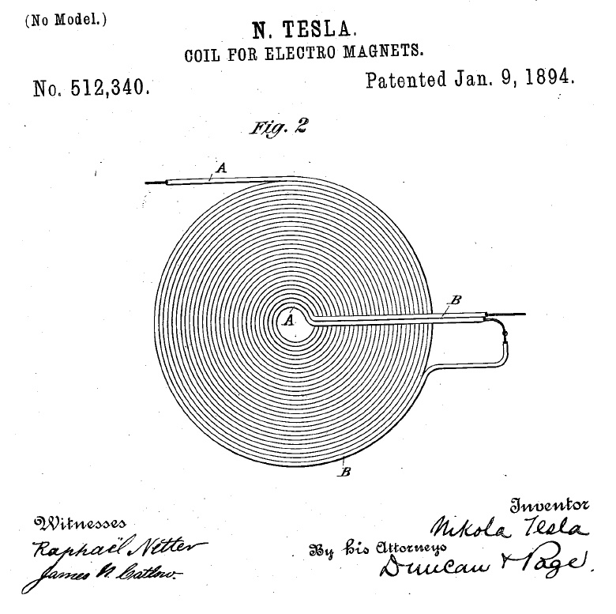

The GEGENE : a Great Efficiency GENErator with a Tesla bifilar
coil... created on december 28, 2012 - JLN
Labs - last update february 1, 2013 All informations and
diagrams are published freely (freeware) and are intended for a private use and a non commercial
use.
Toutes les informations et
schémas sont publiés gratuitement ( freeware ) et sont
destinés à un usage personnel et non commercial
Here is an
interesting experiment about a high power electrical generator
which is able to produce some KW. It uses the electronic
controller of an induction cooker which can be purchased in any
store for less than 80 €. The main specification of the
GEGENE (Great Efficiency GENErator) is that it uses a BIFILAR
PANCAKE COIL patented by Nikolas TESLA in 1894 in the patent N° 512,340.

Introducing the
Projet
In the GEGENE the
flat bifilar coil is electromagnetically coupled with the main
flat coil of the induction cooker and acts as the secundary coil
for the output. The driving and the controlling are fully done by
the main electronic controller of the induction cooker itself.
So, no special electronic equipment or laboratory measurement
tools are required here to succeed in this experiment. You need
only : an induction cooker, a dual flexible wire (speaker wire or
grid wire) and some electrical connectors and plugs. At the
GEGENE ouput you must connect resistive and non inductive loads
such as halogen lamps... The total load power at the output must
be at least 1500 W or more.